开发流程
每次开发一个模块、子功能，都遵循以下流程。一个完整的流程分为八个步骤，熟练之后操作起来很快的。
整个流程其实是围绕提交、分支、Pull Request 展开的。
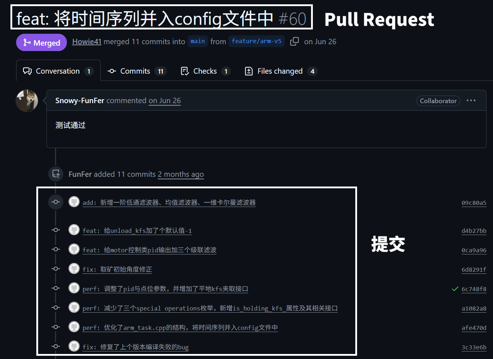
1. 拉取主分支
[!tip]
❓第一次听说分支？分支是什么?
先看看 VS Code 最下方的状态栏，检查一下当前所在的分支是不是主分支。

在源代码页面做一次拉取操作，目的把主分支同步到最新状态。
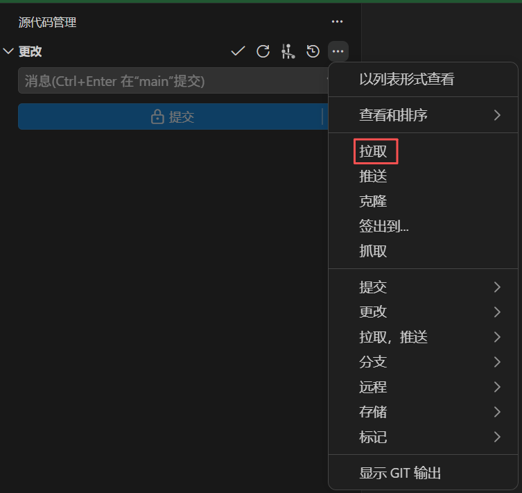
2. 创建开发分支(Dev Branch)
在源代码管理页面，如图所示，选择【创建分支...】
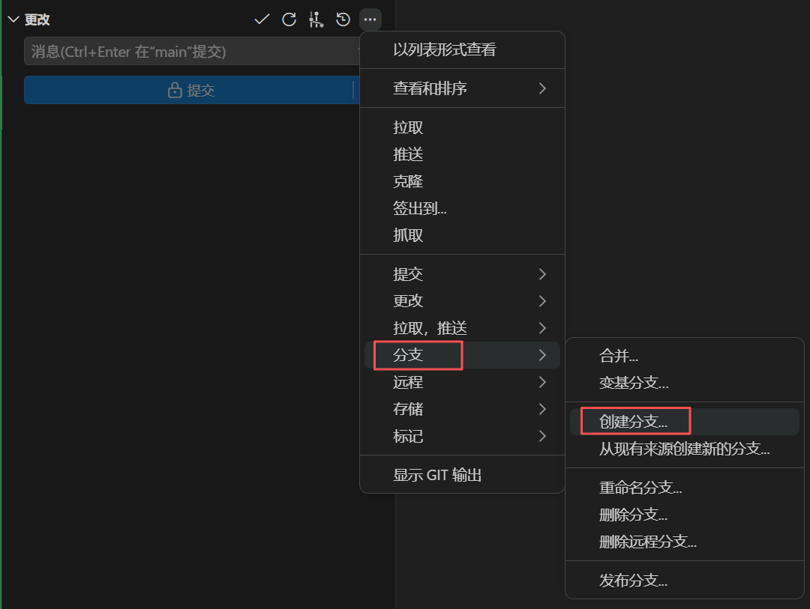
输入分支的名字，按回车键创建。
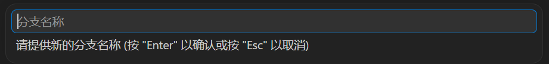
[!note]
❓清晰的分支名有利于团队交接、分支管理。详见 Q&A 章节 怎么给分支起名字?。
创建后，Git 会自动进入到这个分支，此时的修改、提交都发生在个人的开发分支，不会影响到主分支的文件。
你也可以看看 VS Code 底部状态栏，看看当前所在的分支是不是开发分支。
创建分支后，有一个高亮的【发布 Branch】按钮。点击它，这个分支会同步到远程仓库，同学就能看到你的分支了。
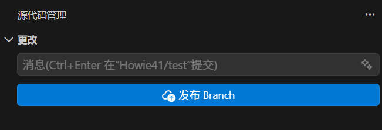
3. 写代码
当你保存代码文件，Git 会追踪这些改动。
VS Code 的源代码管理页面，有改动的文件会显示出来。
[!note]
❓你或许会留意到，文件名旁边出现了金色的
M或者绿色的U。详见 Q&A 章节 文件名旁边的字母是什么意思?。
4. 暂存, 提交
[!tip]
❓第一次听说提交？提交是什么?
Git 默认不会把这次所有的改动都存下来，而是由你来挑选哪些文件要记录到这次提交。
挑选的办法很简单：在源代码管理页面，点击对应文件名右侧的加号 +（暂存更改）。
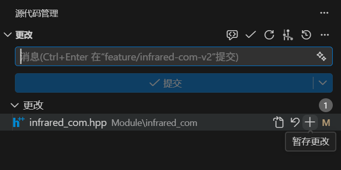
点击后，这个文件就会移动到 暂存的更改 分组下，这表示这个文件已被暂存。
Git 只会把暂存状态的文件记录到提交里。
当你挑好文件，就在【消息】输入框给这次提交写一段描述，比如新增了什么功能，修复了什么问题等等。
做好这一切后，然后点击 提交 ，一次提交就创建好了。
提交之后， 提交 按钮会变成 同步更改 1↑ 。点击它，这次提交就会同步到远程仓库，同学可以切换到你的分支来查看这次提交。
重复第 3 步、第 4 步，在分支上不断迭代更新。直到你认为这个开发分支的任务完成了，可以合并到主分支时，进入第 5 步。
5. 新建 Pull Request
当你做完这个功能的开发，完成了这个分支的任务，编译通过、实机测试通过后，就可以把这个分支合并到主分支，这个操作需要通过 Pull Request 来完成。
[!tip]
❓第一次听说 Pull Request？Pull Request 是什么?
打开 GitHub 仓库页面 → Pull Request → New Pull Request。
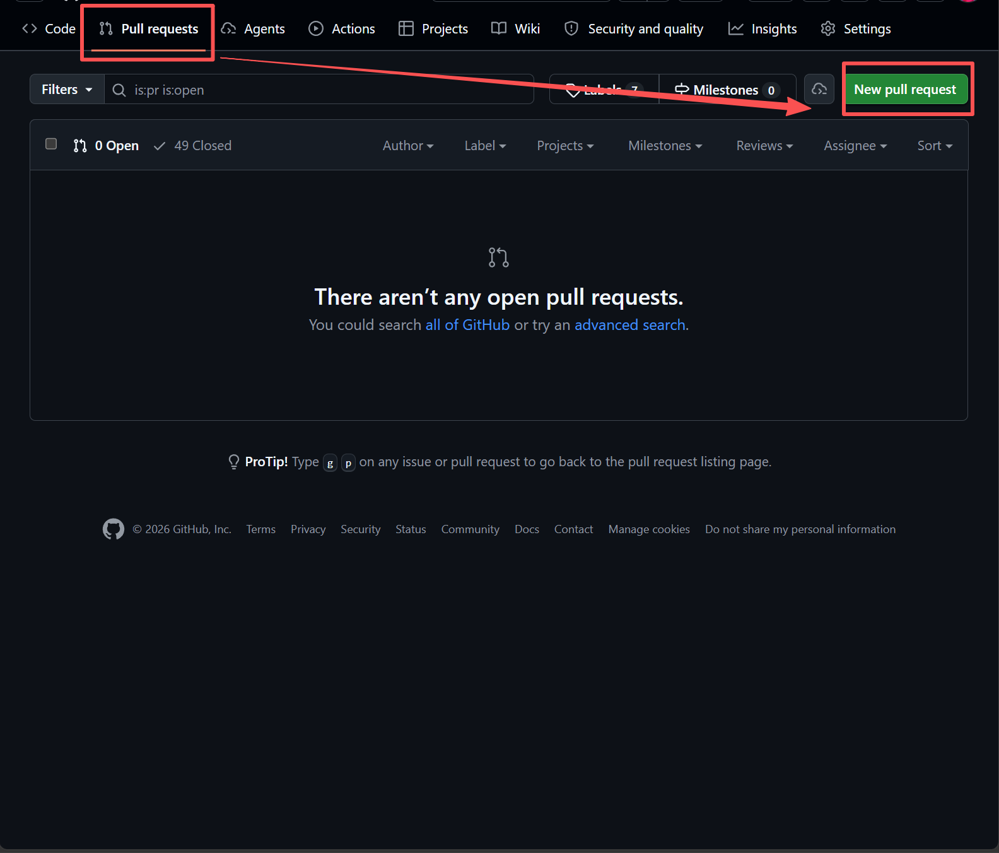
在 compare 处选择你的开发分支。
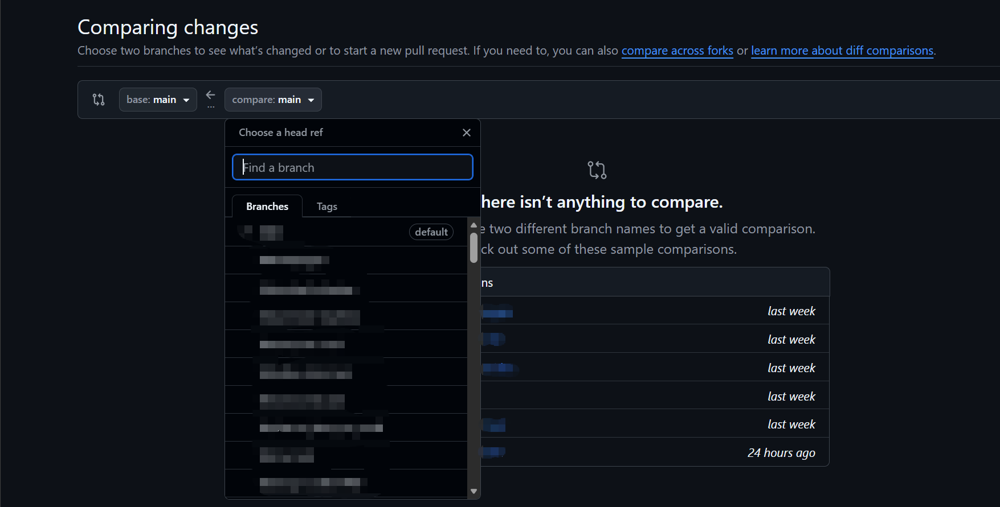
稍等一下，如果显示 Able to merge，就可以点击 Create Pull Request 来创建 PR 了。
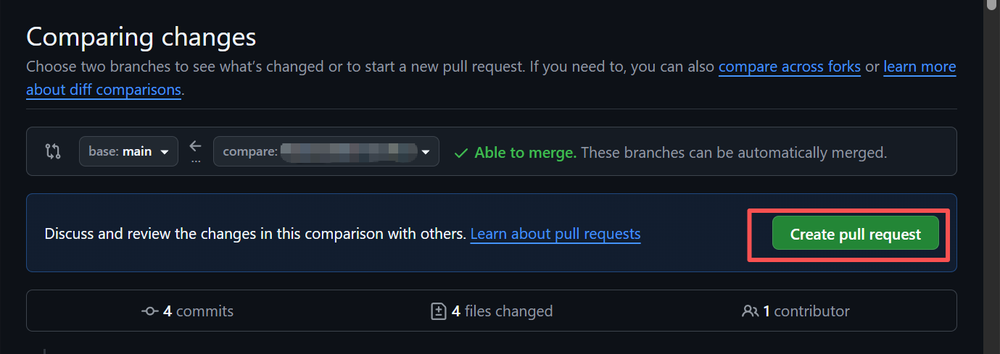
然后给这个 PR 写一个标题，写一些描述，告诉团队这个开发分支做了什么，有什么新功能，以及注意事项等等。之后点击 Create Pull Request 就可以开启 PR 了。
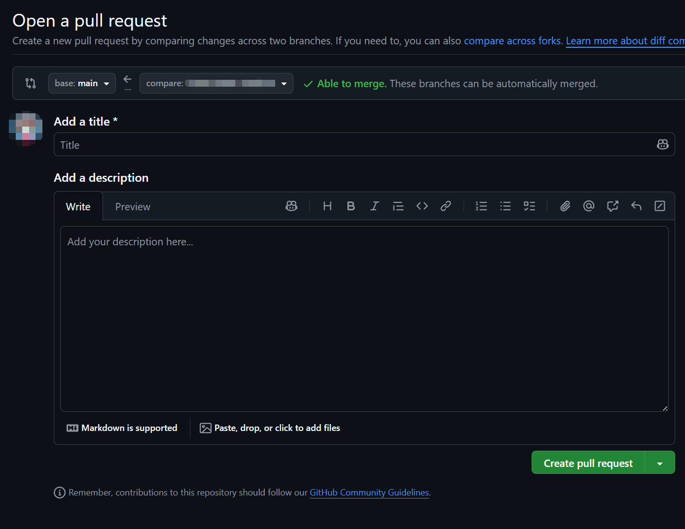
6. 审查代码
接下来通知你的同学，让他们来审查你的代码。PR 的创建者自己不需要做审查这一步。
审查者怎么做
审查也是在 GitHub 的 PR 页面上完成的。操作路径如下：
打开 PR 页面，在仓库的 Pull Request 列表中找到这个 PR 并点击进入。
切换到 "Files Changed" 标签，这里会展示这个分支的改动（绿色行 = 新增，红色行 = 删除）。
审查者如果发现某一行有问题，把鼠标悬停在那一行上，点击左侧的 + 号，可以针对这一行发表评论。
看完所有文件后，点击右上角的 "Submit review" 按钮，会弹出三种选择：
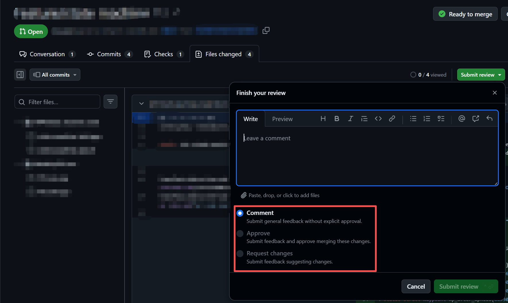
| 选项 | 含义 | 什么时候用 |
|---|---|---|
| Comment（评论） | 发表评论、意见 | 有疑问但不需要修改时 |
| Approve（批准） | 代码没问题，同意合并 | 审查通过后 |
| Request Changes（请求修改） | 代码有问题，不能合并，必须修改后才能合并 | 代码有 bug 或设计问题时 |
点击 Submit review，确认提交审查结果。
如果收到修改请求
如果你（PR 的创建者）收到同学的 "Request Changes"，不需要重新提交 PR——只需要在本地修改代码有问题的部分，然后按照第 4 步那样去提交，PR 就会自己更新，审查者可以看到新的改动并重新审查。
直到审查者发送 Approve 的结果，即同意合并后，这一步才算是完成。
7. 在 Pull Request 中合并
当团队完成了代码审查后，就可以正式合并你的分支。
在 PR 页面最底部，如果没有冲突，就会显示 No conflicts with base branch，此时可以进行合并。
[!note]
如果提示有冲突（Conflicts），不能合并，参阅 如何处理冲突? 。
[!warning]
注意：不要直接点击 Create a merge commit，而是点击旁边的倒三角，选择 Squash and merge。
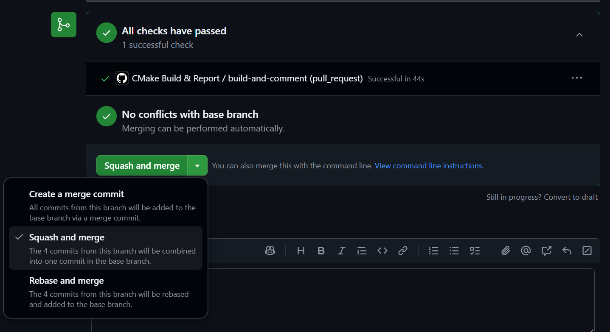
接下来需要填写 PR 的 Commit Message，即提交信息。为了便于项目维护和管理，提交信息与分支名称有类似的规则。
[!note]
❓提交信息怎么写？详见 Q&A 章节 提交信息怎么写?。
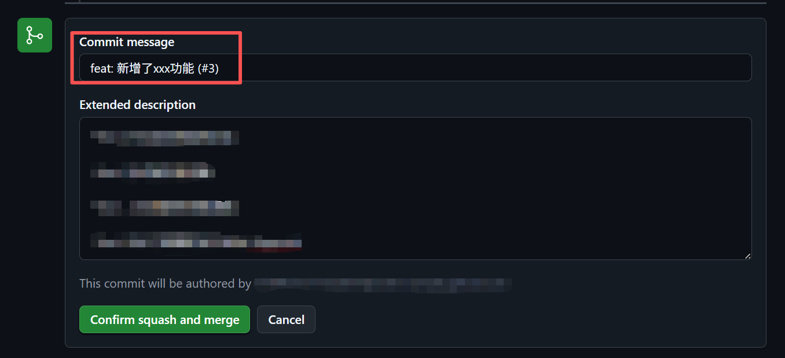
点击 Confirm squash and merge，至此，这个分支正式合并到主分支了。
8. 回到主分支
回到 VS Code，如图所示，点击 签出到... (对应到 git checkout 命令)

在弹出的输入框中输入 main，选择 main（不是 origin/main）。

在源代码管理页面做一次拉取操作，把主分支同步到最新状态。同时也通知其他同学切到主分支并拉取，以同步主分支最新的修改。
至此，一轮开发流程就结束了。
原来的开发分支不再继续使用，后续的开发需要回到第一步 1. 拉取主分支 ，再另起一个新开发分支进行。
[!tip]
如果后续要继续修改这个模块、子功能的内容……
例如：原开发分支叫
feature/chassis-solver：
- 要迭代新版本，创建分支
feature/chassis-solver-v2- 要修复第一版的问题，创建分支
fix/chassis-solver
Tips
实际开发过程中，步骤的进行是这样的：
1→2→3→4→...→3→4→5→6→7→8 →1→2→3→4...。- 熟悉这套流程后，你还可以同时维护多个开发分支，同时做多个功能。
- 并不是所有分支的结局都是 PR 合并到主分支。如果有做正式版、测试版的需要，或者是要测试另一种技术方案，都可以创建一个长期分支，不合并到主分支，和主分支并行。